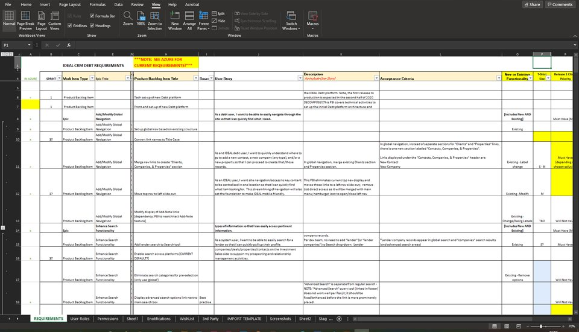
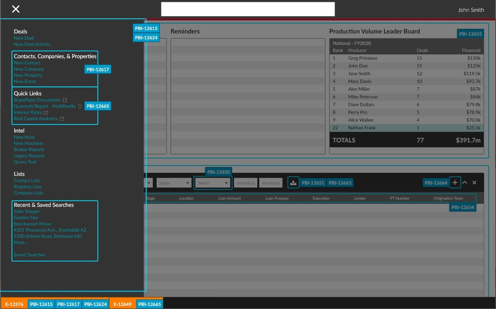
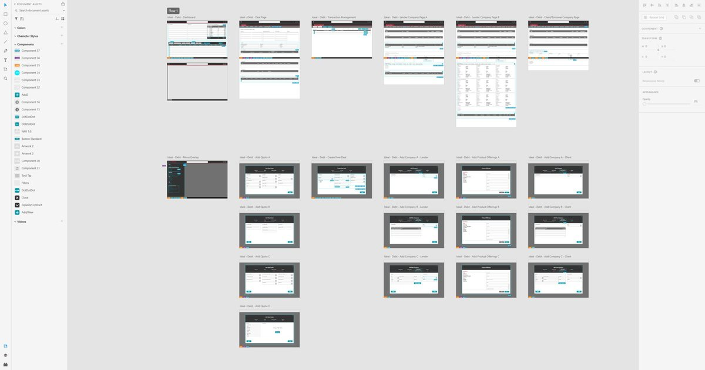

Major CRE Firm
A major commercial real estate firm had just acquired a company that specialized in debt transactions, and needed that business's workflow inside its custom CRM, which was never built for it. Over five months with the consultancy Main Digital, I learned the debt process through interviews with stakeholders and the development team, then turned it into interactive wireframes and a prioritized backlog the team could build from.
Learning a process nobody knew
No one on the platform side had worked with debt transactions before, so the first job was understanding them. I interviewed the acquired company's stakeholders about how deals actually move, and the existing development team about what the CRM could already do. Every requirement went into one working document, so the business and the developers were reading from the same list.

Wireframes tied to the backlog
I designed interactive wireframes inside the client's existing design system, and tagged every part of each screen with the backlog item that would build it. A developer could start from any requirement and find exactly where it lived in the design, and a stakeholder could see what each backlog item actually meant on screen.


Beyond the scope
An experience audit of the existing CRM turned up usability problems outside the acquisition work. Those went into the backlog too, giving the client a roadmap for improvements beyond the immediate project.
Outcome
The client came away with a clear integration plan: a prioritized backlog backed by interactive wireframes, ready for development to build the debt workflow into the existing CRM.